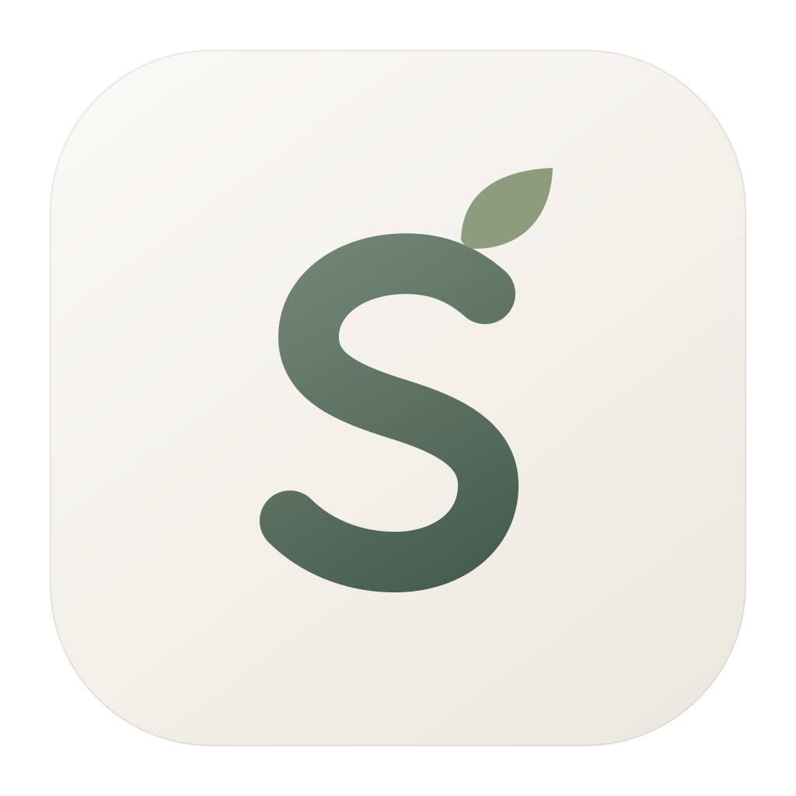
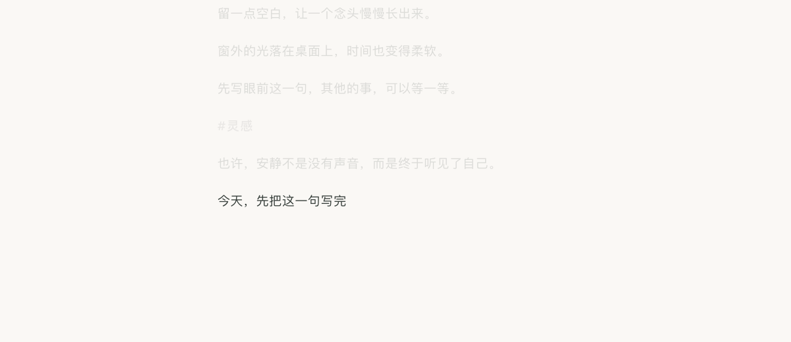
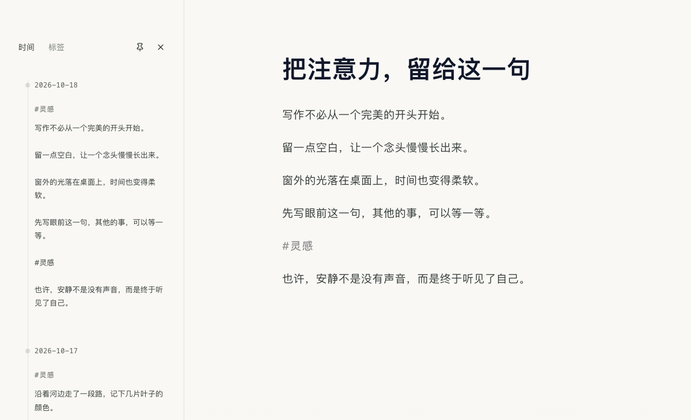
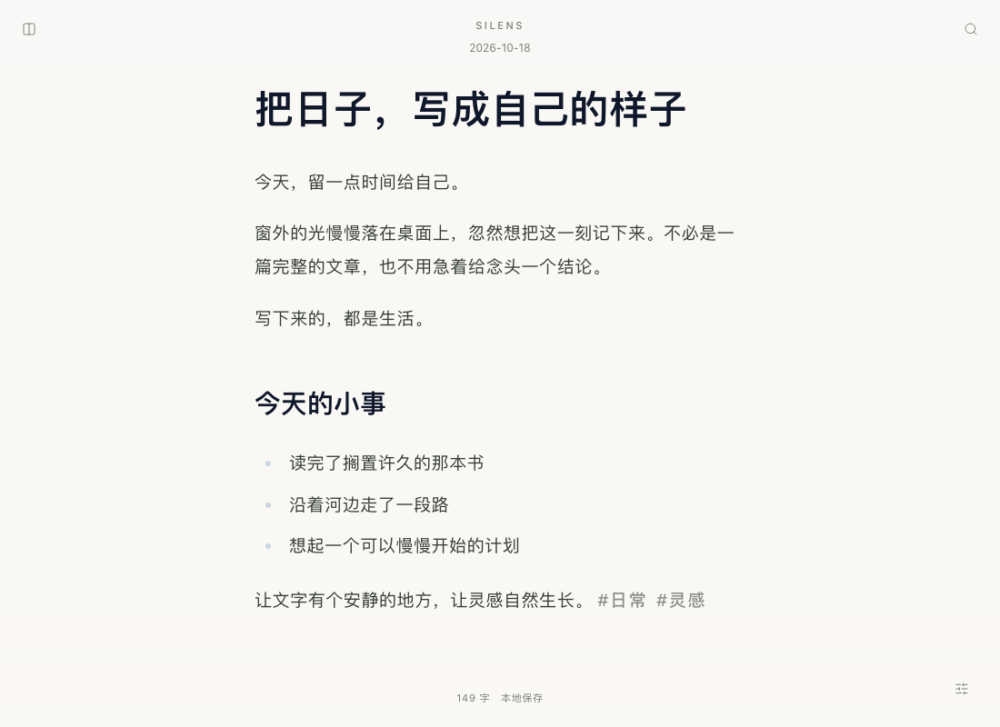

视线不用追着文字跑。
打字机式滚动让当前行保持在窗口上方约三分之一处，长文也不必一路写到屏幕底边。想翻回前文？滚轮、点击或方向键会让自动跟随让出控制，继续连贯输入时再接上。

Silens 息壤A QUIET PLACE FOR YOUR WORDS
文字停在舒服的视线里，界面随书写轻轻隐去。
从眼前这一句，到日后的一次回望，让思绪自然生长。
不用急着抵达结尾。
给眼前的念头，一点生长的时间。
把注意力，留给正在写的这一句。
写下来的，都有机会在未来的某一天，
重新与你相遇。
继续写时，当前行跟随到窗口上方约三分之一处；主动滚动时，让你自由阅读。
交互示意 · 根据应用实际行为制作。下方提供真实界面截图。
LESS NOISE, MORE THOUGHT
舒服的高度、退后的界面、眼前的一句。
每个细节，都围绕书写时的你。
打字机式滚动让当前行保持在窗口上方约三分之一处，长文也不必一路写到屏幕底边。想翻回前文？滚轮、点击或方向键会让自动跟随让出控制，继续连贯输入时再接上。
输入时，标题、字数与氛围入口轻轻淡出；没有其他面板时，鼠标指针也暂时隐去。停笔约两秒，界面再柔和回来。不必先打开某个模式，就能安静地写。
开启“一期一会”，当前句之外的文字变淡、虚化。移鼠可暂时看清全文，继续输入再回到眼前。配合 15、25、45 或 60 分钟的计时，给一段写作完整的注意力。
ONE SENTENCE. ONE MOMENT.
日常沉浸收起界面，句子专注进一步收起周围的文字。两种安静，适合不同的时刻。
Cmd / Ctrl + Shift + F开启 / 退出“一期一会”

YOUR THOUGHTS, RECONNECTED
不只存下一篇篇文件。
也能重新看见，想法如何慢慢连起来。

MAKE YOURSELF AT HOME
纸白、纯白，或夜色，也可跟随系统。
配上细雨、篝火或深夜环境音，调到舒服的音量。
计时结束，温柔地提醒自己休息。
正在预览：纸白主题

今天的笔记自动就位。加粗、斜体、列表、引用与代码结构，让随手记录和长篇写作都能自然展开。
支持跟随系统主题与“减少动态效果”偏好。面板支持键盘操作，回顾侧栏可以固定；专注、搜索与氛围都有快捷键。
有新版本时轻提示，先看更新说明，再决定是否安装。签名校验与安装前的保存备份，让升级也有清楚的节奏。
YOUR WORDS, YOUR FILES
一份普通的 Markdown 文件，
就是你与文字之间的全部距离。
日常写作无需账户与云端服务。笔记以 .md 纯文本存放在本地文件夹，可以用其他编辑器继续打开。
停笔约 1.5 秒自动保存，检测到外部修改时拒绝覆盖。运行期间定时、手动或关闭前创建本地快照，成功后清理旧副本，保留最近 10 份。关闭前先保存并备份，失败时保留窗口和文字。
导出 Markdown、纯文本、PNG 或 JPG；也可以将工作区复制迁移到自己的云盘同步文件夹，原文件仍保留。新的应用版本通过签名更新，在你确认后下载安装。
云盘同步由你选择的第三方服务提供；备份恢复通过手动复制文件完成。
A LITTLE SPACE, JUST FOR YOU
免费、开源。下载后，直接开始写。
安装包与版本说明托管于 GitHub Releases。
查看所有安装包与更新说明 ↗不需要注册，日常写作、搜索与回顾在本地完成。下载新版本和检查更新需要网络连接。
默认位于 Documents/Silens_Notes，以 Markdown 文件保存。在“书写氛围 → 本地文件”中可以打开笔记文件夹、创建备份或迁移工作区。
可以迁移到 iCloud Drive、OneDrive 或 Dropbox 等同步文件夹，由这些服务负责同步。建议避免在两台设备同时编辑同一篇笔记，Silens 不提供跨设备冲突合并。
选择与你的系统匹配的安装包。macOS 当前提供 Apple Silicon 版本；Linux 的应用内更新适用于 AppImage。支持内置更新的版本可在“书写氛围 → 检查软件更新”中检查、下载安装新版本；较早版本需要先手动升级一次。macOS 如提示无法验证开发者，请在确认安装包来自本仓库后，按系统“隐私与安全性”中的提示处理。